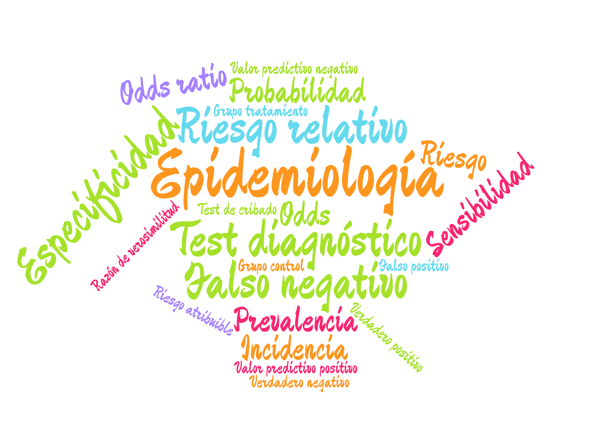

Semana de la Ciencia y la Innovación 2021
Epidemiología para tiempos de pandemias
8 noviembre 2021
¿Qué es la Epidemiología?
Epidemiología viene Griego: Epi (sobre), demos (gente) y logos (estudio), es decir, el estudio de lo que le ocurre a las poblaciones.
En el ámbito de la salud pública, la Epidemilogía es una rama de la Medicina que se encarga del estudio de la distribución y las causas de eventos relacionados con la salud (normalmente enfermedades) en las poblaciones, y la aplicación de este estudio para controlar problemas públicos de salud.
La Epidemiología está de moda
Algunos descubrimientos históricos
- 1854: John Snow determina que la causa de la epidemia de cólera que asolaba Lóndres era que el agua estaba contaminada con heces.
- 1898: Ronald Ross averigua que el transmisor de la malaria es el el mosquito Anopheles.
- 1950: Se descubre que fumar es el principal factor de riesgo de cáncer de pulmón.
- 1954: Se valida la primera vacuna contra la poliomielitis (Jonas Salk’s).
- 1970: Se observó que el ejercicio físico y una dieta sana reducían el riesgo de sufrir un infarto.
- 1983: Robert Gallo, Luc Montagnier y Françoise Barré-Sinoussi identifican el virus que causa el SIDA. Poco después se se observó que el riesgo de contraer el HIV aumentaba con ciertas prácticas sexuales y con el consumo de algunos tipos de drogas.

Índices epidemiológicos basados en probabilidades
Riesgos
- Prevalencia
- Incidencia
- Riesgo y Odds
- Riesgo/Odd relativo
Test diagnósticos
- Sensibilidad
- Especificidad
- Valores predictivos
- Curva ROC
El concepto de probabilidad
Definición clásica (Laplace) $$P(E)=\frac{|E|}{|\Omega|}=\frac{\mbox{Casos favorables a $E$}}{\mbox{Casos posibles}}$$
Ejemplo Al tirar un dado equilibrado, la probabilidad de sacar un número par $E=\{2, 4, 6\}$ es $$ P(E) = \frac{3}{6} = 0.5$$
El concepto de probabilidad
Definición frecuentista $$P(E)\approx f_E = \frac{n_E}{n}=\frac{\mbox{Frecuencia absoluta del evento}}{\mbox{Tamaño muestral}}$$
Ejemplo Se ha aplicado un tratamiento a 100 personas y se han curado 75, entonces la probabilidad de curación del tratamiento es $$P(E) = \frac{75}{100} = 0.75 \Rightarrow 75\%$$
Algunas propiedades de la probabilidad
$$0\leq P(E)\leq 1$$
$$P(\Omega) = P(e_1) + P(e_2) + \cdots + P(e_n) = 1$$
$$P(\overline E) = 1 - P(E)$$
Interpretación de una probabilidad
La probabilidad mide la verosimilitud de un suceso.
De manera informal, se puede decir que la probabilidad mide la creencia o la confianza que tenemos en la ocurrencia de un suceso.
- $P(E) = 0 \Rightarrow$ Mínima verosimilitud
- $P(E) = 0.5 \Rightarrow$ Verosimilitud media (máxima incertidumbre)
- $P(E) = 1 \Rightarrow$ Máxima verosimilitud
El concepto de Odds
$$O(E)=\frac{\mbox{Nº casos con $E$}}{\mbox{Nº casos sin $E$}}=\frac{P(E)}{P(\overline E)}$$
Ejemplo Se ha aplicado un tratamiento a 100 personas y se han curado 75, entonces el odds de curación del tratamiento es $$O(E) = \frac{75}{25} = 3$$
Un odds puede ser mayor que 1.
Interpretación de un Odds
Los odds también permiten cuantificar la verosimilitud de un suceso…, pero en una escala diferente, ya que es una razón de probabilidades.
- $O(E) = 0 \Rightarrow$ Mínima verosimilitud
- $O(E) = 1 \Rightarrow$ Verosimilitud media (máxima incertidumbre)
- $O(E) = \infty \Rightarrow$ Máxima verosimilitud

Conversión de Odds en probabilidades
$$ \frac{O(E)}{1 + O(E)} = \frac{\frac{P(E)}{P(\overline E)}}{1 + \frac{P(E)}{P(\overline E)}} = \frac{\frac{P(E)}{P(\overline E)}}{\frac{P(\overline E) + P(E)}{P(\overline E)}} = P(E)$$
Ejemplo Se ha aplicado un tratamiento a 100 personas y se han curado 75. $$O(E) = \frac{75}{25} = 3 \Rightarrow P(E) = \frac{3}{1+3}=0.75$$
Prevalencia
La prevalencia de una enfermedad $E$ es la proporción de personas que tienen la enfermedad en un momento concreto. $$\mbox{Prevalencia}(E) = \frac{\mbox{Nº individuos afectados por $E$}}{\mbox{Tamaño poblacional}}$$
Ejemplo. En una muestra de 1000 personas 150 tenían gripe. La prevalencia de la gripe es aproximadamente $$\frac{150}{1000}=0.15$$
Incidencia o riesgo absoluto
La incidencia o riesgo absoluto de una enfermedad $E$ es la proporción de nuevos casos durante un periodo determinado (por día, por semana, por mes, etc.) $$R(E)=\frac{\mbox{Nº nuevos casos con $E$ en el periodo}}{\mbox{Tamaño población en riesgo al comienzo del periodo}}$$
Ejemplo. Al comienzo del año se tomó una muestra de 1000 personas sin gripe y al finalizar el año 80 tuvieron gripe. La incidencia de la gripe ese año fue $$ R(E) = \frac{80}{1000} = 0.08$$
Prevalencia vs Incidencia
| Tiempo | Casos | Tipo estudio | |
|---|---|---|---|
| Prevalencia | Puntual | Nuevos y existentes | Transversal |
| Incidencia | Periodo | Solo nuevos | Longitudinal |
- La prevalencia muestra el número de personas afectadas (carga de la enfermedad).
- La incidencia muestra la evolución de la enfermedad y es más útil para detectar brotes y estudiar su causa.
- La incidencia depende solo de la contagiosidad de la enfermedad, mientras que la prevalencia depende también de la duración de la enfermedad y de lo agresiva que sea.
Algunas consideraciones en el caso el COVID
Datos del ministerio de sanidad
La incidencia del COVID se suele dar sobre un periodo de dos semanas (14 días) aunque no siempre.
Los datos son poco precisos y subestiman el riesgo del COVID:
- Muchos asintomáticos no son detectados.
- La detección de casos es mediante test diagnósticos que tienen un margen de error (falsos positivos y falsos negativos)
- Se calcula dividiendo por el tamaño de la población (nuevos casos por cada 100000 habitantes) pero habría que dividir por el tamaño de la población en riesgo (sin contar ya infectados o inmunizados).
Comparación de riesgos
Dos grupos:
- Grupo tratamiento $T$: Individuos expuestos a un factor.
- Grupo control $C$: Individuos no expuestos al factor.
| $E$ | $\overline E$ | $T$ | $a$ | $b$ | $C$ | $c$ | $d$ |
|---|
Riesgo relativo
$$RR(E)=\frac{\mbox{Riesgo grupo tratamiento}}{\mbox{Riesgo grupo control}}=\frac{R_T(E)}{R_C(E)}=\frac{a/(a+b)}{c/(c+d)}$$
Ejemplo
| Gripe $G$ | No gripe $\overline G$ | |
|---|---|---|
| Vacunados $T$ | 20 | 480 |
| No vacunados $C$ | 80 | 420 |
$$RR(G) = \frac{20/(20+480)}{80/(80+420)} = 0.25$$
Interpretación del riesgo relativo
- $RR=1$ $\Rightarrow$ No hay asociación entre el suceso y la exposición al factor.
- $RR<1$ $\Rightarrow$ La exposición al factor disminuye el riesgo del suceso.
- $RR>1$ $\Rightarrow$ La exposición al factor aumenta el riesgo del suceso.
Odds ratio
$$OR(E)=\frac{\mbox{Odds grupo tratamiento}}{\mbox{Odds grupo control}}=\frac{O_T(E)}{O_C(E)}=\frac{a/b}{c/d}=\frac{ad}{bc}$$
Ejemplo
| Gripe $G$ | No gripe $\overline G$ | |
|---|---|---|
| Vacunados $T$ | 20 | 480 |
| No vacunados $C$ | 80 | 420 |
$$OR(G) = \frac{20/480}{80/420} = 0.22$$
Interpretación del odds ratio
- $OR=1$ $\Rightarrow$ No existe asociación entre el suceso y la exposición al factor.
- $OR<1$ $\Rightarrow$ La exposición al factor disminuye el riesgo del suceso.
- $OR>1$ $\Rightarrow$ La exposición al factor aumenta el riesgo del suceso.
Riesgo relativo vs Odds ratio
El riesgo relativo es una comparación de probabilidades pero depende de la incidencia de la enfermedad.
La interpretación del odds ratio es más enrevesada porque es contrafactual, ya que da cuántas veces es más frecuente el suceso en el grupo tratamiento en comparación con el control, asumiendo que en el grupo control es tan frecuente que ocurra el suceso como que no. Su ventaja es que no depende de la incidencia de la enfermedad.
Riesgo relativo vs Odds ratio
| Cáncer | No cáncer | |
|---|---|---|
| Fumadores | 60 | 80 |
| No fumadores | 40 | 320 |
$$ \begin{aligned} RR(E) &= \frac{60/(60+80)}{40/(40+320)} = 3.86 \newline OR(E) &= \frac{60/80}{40/320} = 6 \end{aligned} $$
| Cáncer | No cáncer | |
|---|---|---|
| Fumadores | 60 | 160 |
| No fumadores | 40 | 640 |
$$ \begin{aligned} RR(E) &= \frac{60/(60+160)}{40/(40+640)} = 4.64 \newline OR(E) &= \frac{60/160}{40/640} = 6 \end{aligned} $$
Aplicación a la COVID
Tests diagnósticos
Un test diagnóstico es un test usado para diagnosticar una enfermedad o descartarla.
Normalmente producen dos resultados: positivo (+) a favor de la enfermedad y negativo (-) en contra de ella.
| Test | $E$ | $\overline E$ |
|---|---|---|
| Positivo + | Verdadero positivo $VP$ | Falso positivo $FP$ |
| Negativo − | Falso negativo $FN$ | Verdadero Negativo $VN$ |
Sensibilidad y especificidad de un test
La fiabilidad de un test diagnóstico depende de las siguientes probabilidades.
Sensibilidad
La sensibilidad de un test diagnóstico es la proporción de resultados positivos del test en personas con la enfermedad, $$P(+|E)=\frac{VP}{VP+FN}$$
Especificidad La especificidad de un test diagnóstico es la proporción de resultados negativos del test en personas sin la enfermedad, $$P(-|\overline{E})=\frac{VN}{VN+FP}$$
Sensibilidad y especificidad de un test
Ejemplo
Un test de antígenos para detectar el SARS-COV-2 tiene una sensibilidad del 70% y una especificidad del 95%.
- Si aplicamos el test a 100 enfermos dará 70 positivos y 30 negativos.
- Si aplicamos el test a 100 sanos dará 95 negativos y 5 positivos.
Fiabilidad de un test diagnóstico
La fiabilidad del test depende también de la prevalencia de la enfermedad.
Ejemplo. Suponiendo que la especificidad es del 70% y la especificidad es del 95% y el tamaño poblacional es 1000:
| $E$ | $\overline E$ | Resultado + | 7 | 50 | Resultado - | 3 | 940 |
|---|
| $E$ | $\overline E$ | Resultado + | 70 | 45 | Resultado - | 30 | 855 |
|---|
Fiabilidad de un test diagnóstico
Ejemplo


Cuándo usar un test más sensible o más específico
Utilizaremos un test sensible cuando:
-
La enfermedad es grave y es importante detectarla.
-
La enfermedad es curable.
-
Los falsos positivos no provocan traumas serios.
Utilizaremos un test específico cuando:
-
La enfermedad es importante pero difícil o imposible de curar.
-
Los falsos positivos pueden provocar traumas serios.
-
El tratamiento de los falsos positivos puede tener graves consecuencias.
Valores predictivos de un test
Valor predictivo positivo
El valor predictivo positivo de un test diagnóstico es la proporción de personas con la enfermedad entre las personas con resultado positivo en el test, $$P(E|+) = \frac{VP}{VP+FP}$$
Valor predictivo negativo
El valor predictivo negativo de un test diagnóstico es la proporción de personas sin la enfermedad entre las personas con resultado negativo en el test, $$P(\overline{E}|-) = \frac{VN}{VN+FN}$$
Valores predictivos
Ejemplo. Suponiendo que la especificidad es del 70% y la especificidad es del 95% y el tamaño poblacional es 1000:
| $E$ | $\overline E$ | Resultado + | 7 | 50 | Resultado - | 3 | 940 |
|---|
$$VPP = \frac{7}{7+50} = 0.123$$ $$VPN = \frac{940}{3+940} = 0.997$$
| $E$ | $\overline E$ | Resultado + | 70 | 45 | Resultado - | 30 | 855 |
|---|
Interpretación de los valores predictivos
$$ \begin{array}{rcl} VPP>0.5 & \Rightarrow & \mbox{Diagnosticar la enfermedad}\newline VPN>0.5 & \Rightarrow & \mbox{Descartar la enfermedad} \end{array} $$
Curva ROC
En los test diagnósticos basado en la medición de una variable cuantitativa (como por ejemplo los test de antígenos para la COVID) la sensibilidad y la especificidad dependen el umbral fijado para dar un positivo.

Interpretación de la curva ROC
-
El mejor test es el que que se sitúa en la esquina superior izquierda de el espacio (sensibilidad 1 y especificidad 1).
-
La diagonal representa un test con un diagnóstico aleatorio.
-
Para evaluar la fiabilidad de un test diagnóstico independientemente del umbral de positivos se suele medir el area bajo la curva ROC, también conocida como AUC (area under the curve). Según del valor de la AUC, se tiene
-
0.5: Diagnóstico aleatorio.
-
[0.5, 0.6): Test malo.
-
[0.6, 0.75): Test regular.
-
[0.75, 0.9): Test bueno.
-
[0.9, 0.97): Test muy bueno.
-
[0.97, 1): Test excelente.
Aplicaciones a la COVID
Algunas consideraciones en el caso de la COVID
Los test de antígenos son más rápidos que las PCR pero son menos fiables:
-
Menos sensibles $\Rightarrow$ más falsos negativos.
-
Menos específicos $\Rightarrow$ más falsos positivos.